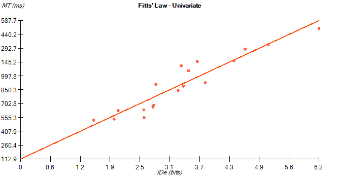
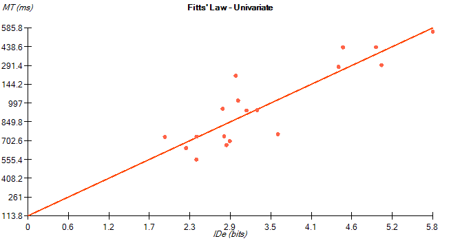
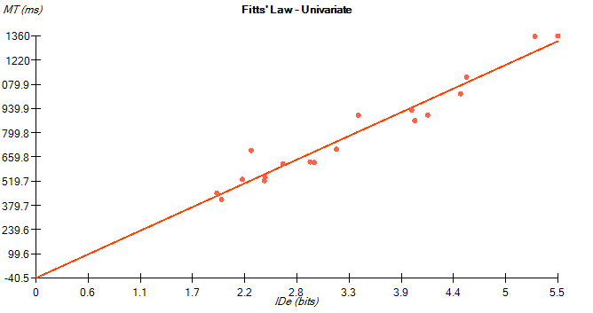

For this study, I chose to test the accuracy of Fitts Law, as well as the speed and accuracy differences between a users dominant and non-dominant hand.
In this study Trevor Green(myself) and Jeffery Jones(My roomate) each took Jake Wobbroks Fitts law test with our right and left hand. We took the test on the same computer, and used the trackpad on my laptop as the input method.
Fitts' Law - Univariate for Trevor 1 Right hand N = 18 MTavg = 789.2778 ms Error% = 0.0639 MT(1d) = -40.4758 + 248.4096 * IDe TP_avg(1d) = 4.281 bits/s TP_inv(1d) = 4.0256 bits/s a(1d) = -40.4758 ms b(1d) = 248.4096 ms/bit r(1d) = 0.9722
Fitts' Law - Univariate for Trevor Left Hand N = 18 MTavg = 976.6111 ms Error% = 0.0864 MT(1d) = 113.7902 + 253.9239 * IDe TP_avg(1d) = 3.5386 bits/s TP_inv(1d) = 3.9382 bits/s a(1d) = 113.7902 ms b(1d) = 253.9239 ms/bit r(1d) = 0.8814
Fitts' Law - Univariate for Jeff right hand N = 18 MTavg = 910.7778 ms Error% = 0.0988 MT(1d) = 112.9027 + 238.6101 * IDe TP_avg(1d) = 3.6781 bits/s TP_inv(1d) = 4.1909 bits/s a(1d) = 112.9027 ms b(1d) = 238.6101 ms/bit r(1d) = 0.9404
Fitts' Law - Univariate for Jeff left hand N = 18 MTavg = 1141.7778 ms Error% = 0.0617 MT(1d) = 124.1912 + 303.5359 * IDe TP_avg(1d) = 2.9385 bits/s TP_inv(1d) = 3.2945 bits/s a(1d) = 124.1912 ms b(1d) = 303.5359 ms/bit r(1d) = 0.9524
Our data was extremely accurate in predicting the fitts law model, the average r value of the four tests was 0.9366
The average error percent(right) was 0.08135
The average error percent(left) was 0.07405
The average speed (right) was 850.02
The average speed (left) was 1059.15
Suprisingly, Jeff and I were on average less accuratte with out non-dominant hand. I hypothesize this may be because we took the test with our dominant hand first and therefore had more practice for our non-dominant hand. Just as we expected however, our dominant hands were significantly faster at preforming the test.